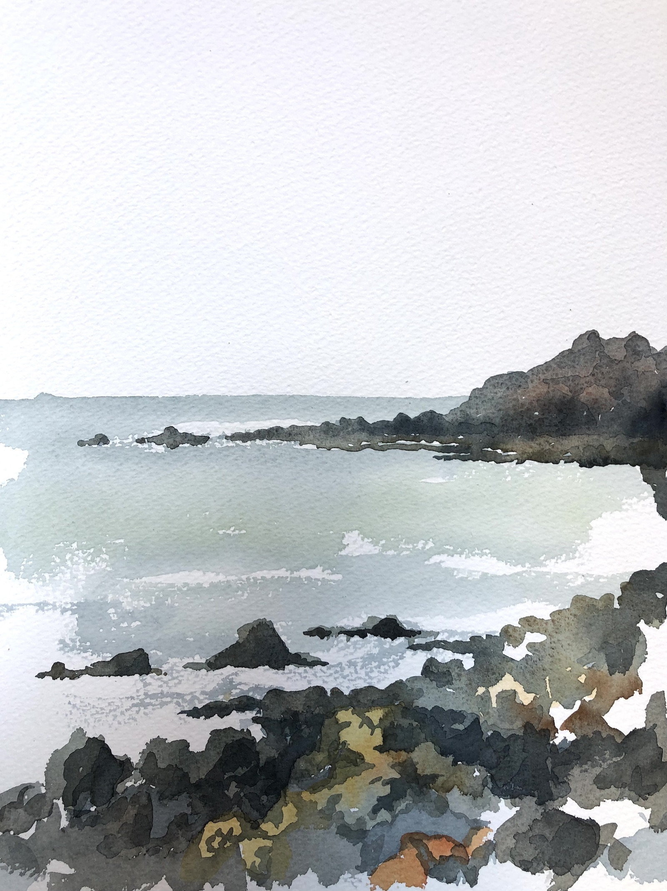
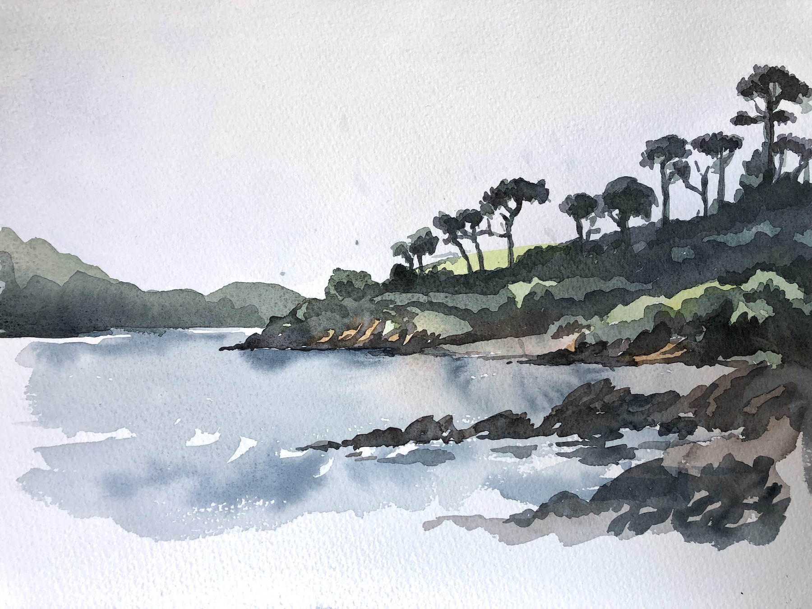
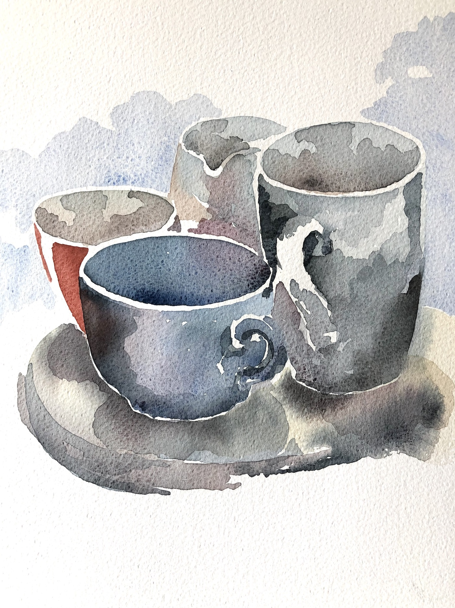

I am painting again after several years' gap. A little rusty but good to be exploring the reflective water and characteristic silhouettes of the Monterey Pines of southern Cornwall.

Chynhalis Point from Coverack.

Monterey Pines Durgan.

Un-still life.